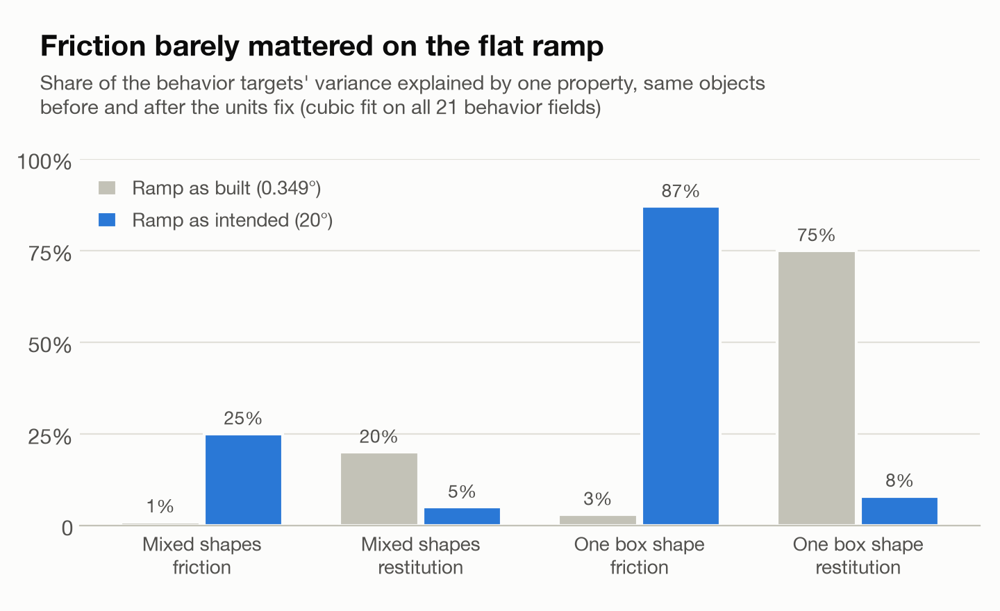
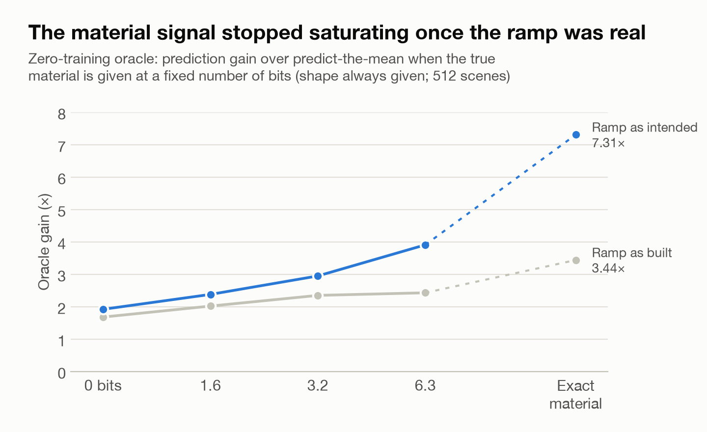
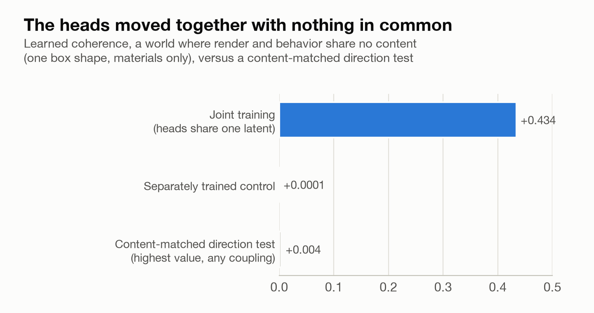
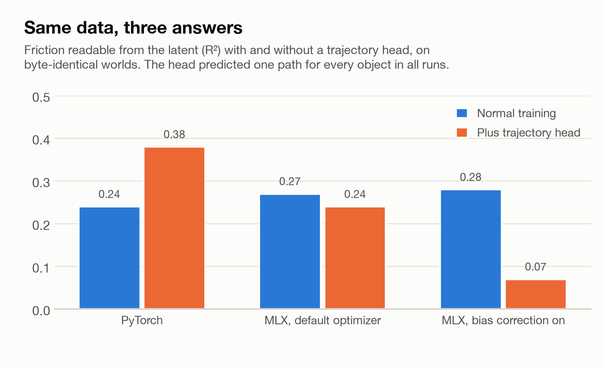
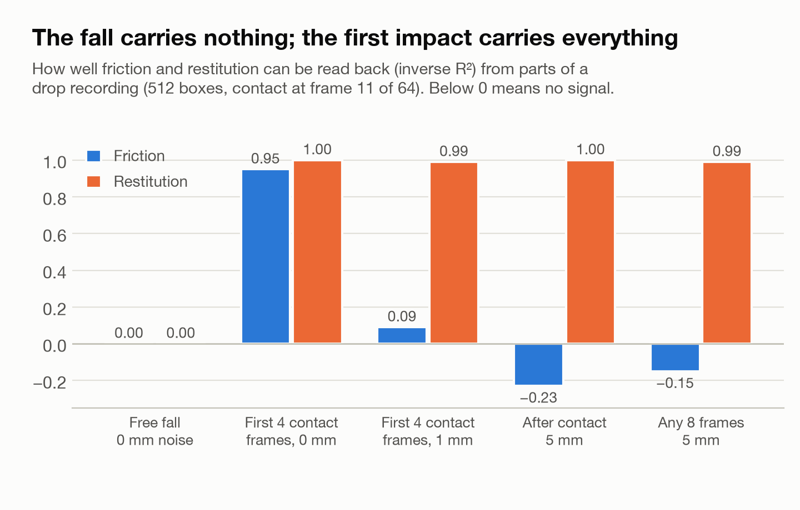
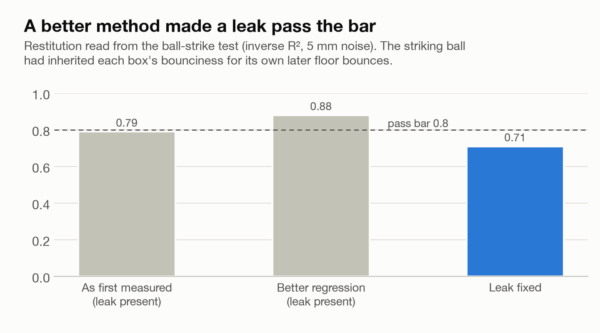
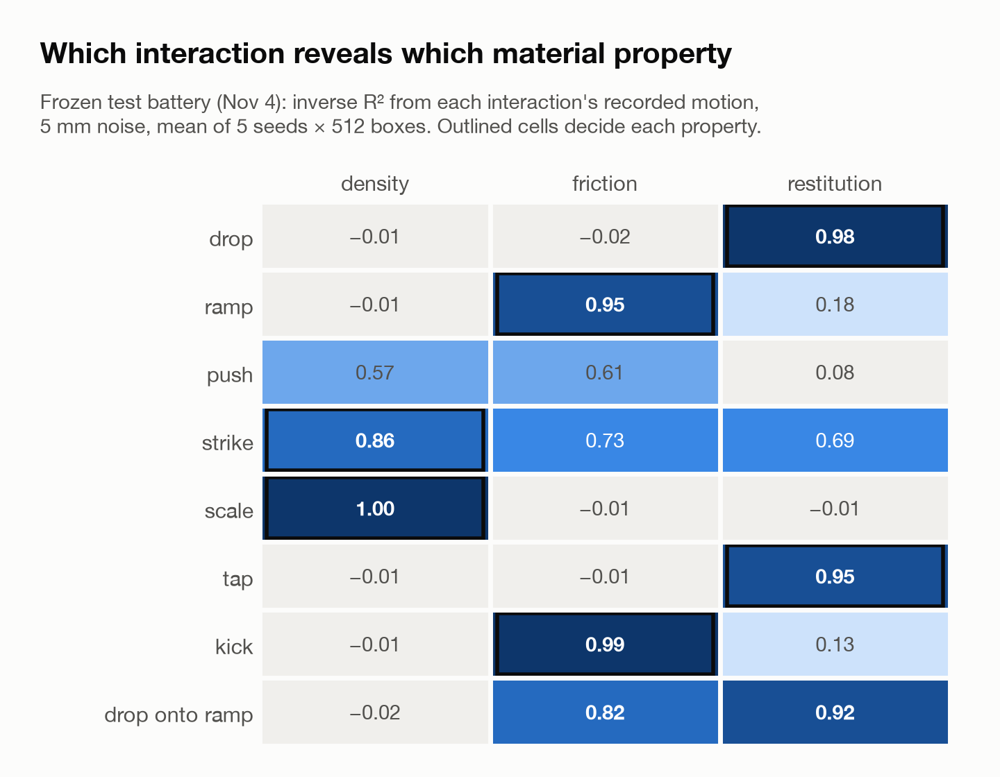

The Empty Milk Carton Test: Can a Model Know What Things Are Made Of?
A one-million-parameter model, a simulated world where every answer is known, more than thirty preregistered findings, and one units bug that bent half of them. What it means for world models, robot data and LLM physics benchmarks.
Pick up a milk carton you believe is full and find it empty, and your arm shoots upward. Before your fingers touched it, your brain had already estimated its weight from how it looked, and committed your muscles to that estimate. People do this constantly: we judge that a pan is heavy, a floor is slippery or a ball is bouncy before we touch anything, from appearance alone.
The pitch behind the current wave of world models is that a machine can do the same thing in a deeper way: hold one understanding of an object, what it is made of and how it will behave, and project both its appearance and its motion from that single understanding. If that is true, a robot that has seen a ceramic mug knows roughly how it will slide and bounce before touching it.
pseudo-marble is a small instrument built to test that claim where the answer is known exactly. It is a simulated world of objects with hidden material properties (density, friction, restitution), a model of about one million parameters that sees each object from 16 camera angles, and a physics engine, MuJoCo (Todorov et al., 2012), that supplies the true outcome of every test. Results are preregistered where possible, run over multiple seeds, and published whether they come out positive or negative. The model trains on an Apple Silicon laptop, and a second training site in a cloud container reruns the work on different hardware and a different training library. The code, the full findings record and every correction are public: github.com/sbayer2/Project-Free-Robot-Agent-World.
The most useful things the project has produced are not about world models. They are about how easy it is to measure the wrong thing, and how to catch it.
What it shows, in practice
1. A single units bug can bend a whole research program, and the warning signs are usually visible. The "20 degree" ramp in the tilt test was a 0.349 degree ramp from the day the test was written, because an angle already converted to radians was handed to a scene format that reads degrees. Think of a driving examiner who means to test braking on a steep hill but runs every exam in a flat parking lot: every car stops, so braking skill never shows up in the scores. On the nearly flat ramp nothing slid, so friction, the property you most often judge from how a surface looks, explained about 1 percent of the behavior the model learned from. On the real ramp, with the same 512 objects, it explains about a quarter, and most of the behavior in the single-shape worlds. Two warning signs were explained away rather than checked, and the fix then sat on a feature branch for two months while new work was built on the broken version.

2. Results with built-in controls survived the bug; results about the world did not. If every stopwatch at a track meet runs slow, the finishing order is still right but every time is wrong. The findings that compared a trained model against an untrained one, or a jointly trained model against separately trained ones, are finishing orders: both sides ran in the same broken world. The findings about how much the material matters are times, and they are being re-measured.
3. A shared latent buys prediction, not unity. Two puppets hung from one rod both jerk when you shake the rod, whether or not they are acting out the same story. Training one representation to drive both a render head and a physics head makes the heads move together when you perturb it, and that co-movement turned out to be the rod, not a shared story: in a world where the two heads share no information at all, joint training produced the largest co-movement score in the project. A content-matched measure read zero, and an external test of held-out prediction read null.
4. Similarity metrics have large free floors. Two untrained networks fed the same inputs agree on neighborhoods at 35 times chance. A collapsed model, one that maps every input to the same point, scored higher on the naive coherence metric than a healthy one, the way a stopped clock is perfectly consistent. A training objective that rewarded coherence directly behaved like teaching to the test: the metric went up while prediction fell below a predict-the-mean baseline.
5. LLM "physics reasoning" needs a trivial baseline and a verified simulator. An early test concluded that a language model failed at ramp physics. The model had been right and the ramp had been flat. Rescored on the repaired world and audited, the competence story still did not survive: ridge regression on eight static features beat every LLM condition by about four times, the equivalent of a sports pundit losing to "always pick the favorite".
6. The interaction is the encoder, and filtering is a choice. Watch a basketball fly across the court and you learn nothing about how well it is inflated; watch it hit the floor once and you know. Measured with no training at all, the simulated objects behave the same way: free flight carries no information about the material, contact carries all of it, gravity-driven tests cannot reveal mass, and a drop's friction signal lives in about 64 milliseconds of sub-millimeter motion that 1 millimeter of sensor noise erases. Discarding awkward cases, such as boxes that tumble, silently removed mostly the bouncy ones.
7. Replication on a second machine catches what one machine cannot. Different training libraries, processors and simulator versions exposed a trajectory head that had learned nothing, boxes falling through a spring scale, and a simulator-version effect on borderline contacts. None of these showed up when one setup checked its own work.
The rest of this piece is the evidence behind those seven points.
The setup
The claim under test is the strong one: one latent from which both looks and behavior follow. The instrument has four parts.
- A world with an answer key. MuJoCo scenes of objects whose density, friction and restitution come from a continuous material sampler. Appearance (color, roughness, metallic, transmission) is bound to physics through real material identities, so glass looks transmissive and is dense, and rubber looks matte and is grippy. The coupling is authored, and its strength is a dial.
- A probe battery. Each object is dropped, set on a tilted ramp and pushed; the outcomes form a 21-number behavior vector.
- A shared-latent model. Sixteen 128-pixel views go into an encoder; one latent feeds a render head, a behavior head and an essence head that predicts the three material numbers.
- Tests with teeth. Held-out materials sit in an extrapolation corner (heavy and bouncy, outside the training range), so interpolation cannot earn a good score.
The canonical trainer is MLX (Hannun et al., 2023) on the laptop's GPU; a PyTorch (Paszke et al., 2019) mirror runs in the cloud and was certified against it before use. The cloud containers turned out to have 4 cores, 15 GB of memory and no GPU, about a good laptop, so the cloud is used for many small parallel jobs rather than big ones.
The summer program: honest metrics, and the hunt for the essence
Making the metric honest. A shared latent gets a sizeable coherence score before training starts, simply because both heads read the same vector, so the honest number is trained minus untrained. With that subtraction, an early 20-seed run showed a weak, unstable positive, and the instability turned out to be two basins: in 7 of 20 seeds the encoder collapsed to a constant, and the collapsed seeds scored higher. The collapse was an early learning-rate overshoot; at 5e-4, all 20 seeds trained healthy, and learned coherence came out at +0.146 (t about 8.3).
The hunt. The next questions asked how much material information the model was extracting, and the answers looked clean at the time. Behavior prediction saturated when the latent was squeezed to a single ternary value, about 1.6 bits, using a finite scalar quantization slot (Mentzer et al., 2023) between encoder and heads. A zero-training oracle fit directly on the generator's variables showed that shape alone predicted nearly as well as the model. It was the story of a wine taster who names the region correctly every time by reading the shape of the bottle: the model appeared to have learned shape and only about 8 percent of the material signal the pixels carried. Three follow-ups (a probe of the latent, an auxiliary loss, and higher resolution with oblique lighting) each made the material more visible inside the model without moving behavior. A dial that strengthened how much appearance reveals physics then closed most of the gap.
What the bug did to that hunt. All of it was measured on the flat ramp. A before-and-after comparison on the same 512 scenes, possible because the old outcomes were kept in an audit file when one world was regenerated, shows how much changed:
- Knowing an object's true material is worth about three times as much prediction gain on the real ramp (an oracle improvement of +5.4 against +1.75).
- The material signal no longer saturates at a few bits. Its bit curve is still climbing at 6.3 bits, where the flat-ramp curve flattened, which is where "the essence is about 1.6 bits" came from.
- At the historical coupling, the share of the material signal reachable from pixels falls from 56 percent to 7 percent. The question shifts from "why does the model ignore the material" to "can pixels carry friction at all".
- The coupling dial was defined as the correlation between roughness and friction, the one channel that barely affected behavior. Whatever the dial's gains came through, it was the other channels it also strengthened, such as metallic and density.

The method lesson stands: before blaming the student, check whether the textbook contains the answer. Run the zero-training oracle first, and treat interventions that make a signal more visible without moving the output as evidence about signal strength. The specific numbers do not stand.
Does a single essence exist inside the model?
The second half of the summer asked whether a shared latent produces the thing world models advertise: one representation both outputs genuinely share. These results rely on built-in controls, the finishing orders from the stopwatch analogy, so the flat ramp does not undo the mechanisms, though their readings against coupling strength need re-measuring.
- The untrained floor is enormous. Shine two lamps at a sculpture from random angles and the two shadows will resemble each other, because both are projections of the same shape; no one had to learn anything. Untrained networks are random projections in the same sense, and random projections preserve geometry (Johnson and Lindenstrauss, 1984). Instrumenting the Platonic Representation Hypothesis (Huh et al., 2024) on the coupling ladder, untrained encoder pairs agreed on neighborhoods at 0.67 to 0.72, 35 times chance. Trained seeds aligned below that floor at all but the loudest coupling. Two independent learners forced through a one-trit bottleneck agreed almost perfectly (0.87 to 0.96 against a null of about 0.40): scarcity manufactures consensus.
- Architected unity fails both ways. A ladder of bottleneck sizes is a trade-off curve with no point that is unified without cost. A differentiable coherence objective is a Goodhart machine (Goodhart, 1975; in Strathern's 1997 phrasing, when a measure becomes a target it ceases to be a good measure): the trained metric reached +0.78 while prediction fell below the predict-the-mean baseline and cross-seed agreement collapsed. Constraints that reference the world converge; constraints that reference a metric diverge.
- Entanglement, not content. This is the puppet rod measured directly. In a world with one shape and materials only, where the render and behavior heads share no world content, joint training produced coherence of +0.434. A disjoint control read +0.0001. Magnitude coherence measures how tightly two heads are wired to one substrate.
- The content-matched measure reads zero. A directional metric asked whether the latent direction that writes a material into the render aligns with the direction the essence head uses for the matching physics. It read +0.004 at most, even where metallic appearance is density to a correlation of 0.992 and the essence head extracts it with a gain of 5.67. Separately trained render-only and behavior-only models produced latents that are near-perfect linear transforms of each other (stitching R² at least 0.998), like two maps of the same city drawn with north pointing different ways: the geometry is set by the substrate, and training chooses what to read.
- No operational advantage. If one essence is real, a jointly trained model should predict unseen materials better than two separately trained models. At every coupling the advantage was null or inconclusive: −0.069 (t −0.13) at the loudest, and −0.115 (t −0.16) on an independent second holdout. The entry carries a frozen caveat that the holdout was gentle. On the real ramp friction becomes a threshold (a box slides only when its friction is below tan 20°), which is much harder to extrapolate, so this test is worth repeating.

Two process details from that last test are worth copying. The pilot missed its own preregistered difficulty band and the miss was recorded as a binding limit on inference. When two gate bugs surfaced after the outcome table printed, the fix was a fresh-seed confirmatory rerun on data that did not exist when the gates were amended. Every verdict reproduced.
How the bug was found, and why it spread
The project also tested whether language models carry usable physics. In July, a 35-billion-parameter "language world model" predicted boxes would slide 18.7 meters down the ramp, against a baseline of 0.013 meters. The record read this as "MuJoCo's high-friction objects grip and stay put", even though boxes with friction of 0.05, far below tan 20°, also did not slide: the equivalent of a sled that will not move on a hill of ice. Ten days later, a preregistered prediction that the tilt slide depends on friction passed, but through bounce counts and settle times, not slide distance. Nobody checked which fields carried it.
The bug was found in August, during a later LLM study, by tracing the units through the code. One look at the ground plane's tilt would have settled it in July. This is the line as it was written in June (lightly trimmed):
def run_tilt(shape, material, spec, physics_cfg):
angle = math.radians(spec.angle_deg) # 20 becomes 0.349
z = half_height(shape) + 0.05
model = mujoco.MjModel.from_xml_string(
build_mjcf(shape, material, object_z=z, ground_euler=(angle, 0.0, 0.0))
)The scene template writes that value into the ground plane as euler="{gx} {gy} {gz}", and MuJoCo's scene format reads euler in degrees unless the file declares otherwise. Nothing errors. The ramp is simply 0.349 degrees. The fix is one line, and it came with a regression test that fails if the conversion ever returns:
# MJCF `euler` is DEGREES by default (no <compiler angle="radian"/> in the
# template), so ground_euler must receive degrees.
angle = spec.angle_degdef test_tilt_call_sites_pass_degrees_not_radians():
src = inspect.getsource(G.run_tilt)
assert "math.radians(" not in src, (
"run_tilt must pass DEGREES into ground_euler")Once corrected and fully audited, the LLM result inverted and then narrowed. The reasoning chains had been computing approximately correct 20 degree physics all along, and the no-reasoning condition's "safe defaults" had matched the broken world by accident. But on the full split the best condition still scored below predict-the-mean, and ridge regression on eight static features beat every LLM condition by about four times across 57 to 60 cells. A benchmark labeled physical reasoning was substantially feature regression.
The project's own propagation report lists why the error travelled: warning signs were explained instead of checked; the coupling metric was never tied back to whether friction moved the targets (a one-line variance check would have shown 1 percent); the fix lived on a branch for two months; regeneration was partial and in place, so at the time of the report 45 of 46 stored worlds still carried the flat ramp and one old reproduce command silently returned new numbers; the unit audit covered the library but not the scripts folder, where a third call site lived; and corrections reached the repository faster than they reached the pages that quoted the old results.
The check that would have caught it in July is small enough to run on every new world. A sketch of it (the project's version fits all 21 normalized behavior fields on one property at a time):
import numpy as np
def share_explained(prop, behavior):
"""Mean R² of a cubic fit of each behavior field on one material property."""
scores = []
for y in behavior.T:
fit = np.polyval(np.polyfit(prop, y, 3), prop)
scores.append(np.corrcoef(fit, y)[0, 1] ** 2)
return float(np.mean(scores))
# Run it for friction, restitution and density before training anything.
# If the property your study is about explains almost nothing, stop.Replication: the head that never learned
After the fix, a trajectory-supervision experiment reran on the real ramp. In PyTorch it showed a significant rise in how much friction the latent held, which contradicted the preregistered prediction and was reported as such. The same experiment in MLX, on byte-identical worlds with the frozen recipe and the frozen verdict script, read no effect. Changing one optimizer setting made it fall. Same data, three answers.
Looking inside settled it. True trajectories vary across objects by about 0.25; the trajectory head's predictions varied by about 0.002, in all 8 PyTorch runs and all 5 MLX runs. The head predicted one path for every object, like a weather forecaster who announces the yearly average temperature every morning: never far off on a typical day, and no forecast at all. On the real ramp the slide is measured in meters and made up 99.4 percent of that target, so guessing the average was the cheapest way to lower the loss. The three "answers" were drift of the latent under a head that had learned nothing, like a weathervane in still air whose direction says more about how it was mounted than about the wind. The fix for the next version is to rescale the target per probe before training, so no single field can drown out the rest.

A separate pilot found something real in the same period, labeled as a pilot. Friction is drawn in this world as the sharpness of a specular highlight, which changes as the camera moves, the way a diamond's sparkle only exists in how it changes as you turn your head. The project's ceiling for "friction visible in the photos" averaged the 16 views first and read 0.18. Measuring how the views differ from each other read 0.64 (0.61 with the view order shuffled, at or below zero in a control world). Averaging the views averaged away the sparkle.
The current experiment: physics as the encoder
Everything above asked whether appearance predicts behavior, and appearance only carries physics because the world's author wrote it in. The current experiment removes that crutch. Every object looks identical, and the question is: watch one interaction, predict a different one. Watch a box fall and bounce, predict how far it slides down a ramp. The only route from one to the other runs through the material, so success requires recovering it.
A useful picture is a postcard written in three invisible inks, one for weight, one for grip and one for bounce, where each test is a lamp that makes some inks glow and leaves others blank. The material is the three-number message, each test spreads it over thousands of position and time samples, the camera is the channel, and the model has to read the postcard. Measured before any model exists, the original lamps left most of the card blank.
- Density was invisible. Galileo's point: heavy and light objects fall alike, so drops and ramps, which are driven by gravity, cancel mass. A fixed push moved 84 percent of boxes less than a centimeter, because masses span 1.4 to 216 kilograms, and a stronger ladder of pushes still had to overcome friction before revealing mass. Two familiar tools finally read it: a spring scale, the bathroom-scale reading of weight, and a strike, which works like billiards, where a cue ball hitting a heavier ball bounces back and one hitting a lighter ball follows through.
- Free flight carries nothing. In a drop, frames before contact read 0.00 for every material property. Animators call these frames in-betweens: the motion between the poses that matter, fully determined by the poses on either side. Gravity draws them the same way for every material.
- Contacts are keyframes. The first four frames of contact carry friction at 0.95 noiseless; 1 millimeter of blur reduces that to about 0.1. Restitution is re-encoded at every bounce, so almost any handful of frames recovers it. A window meant to be "free fall only" that ran 2 milliseconds into the impact gave away restitution perfectly, so every test now adds realistic noise before scoring.
- A 20 degree ramp reads friction for only 30 percent of boxes, the ones slippery enough to slide. The redesign uses a ramp at six angles and a curling-stone kick on flat ground: a box launched at a fixed speed slows at a rate set by friction alone, whatever it weighs. It is the same physics that lets curlers change how far a stone travels by sweeping the ice in front of it.

The redesign found two leaks, and the way it found them is the useful part.
- A better scoring method made a fake signal more convincing. To give each collision the right bounciness, the striking ball inherited the box's restitution, including for its own later bounces off the floor. The strike appeared to read restitution at 0.79, then 0.88 with a better regression, above the bar. It was an exam with the answers printed faintly on the back of the page, and sharper eyes simply read the leak more clearly. With the leak fixed, the strike read 0.71, below the bar.
- A grip test that was secretly a bounce test. On a steep ramp, boxes grippy enough to hold still kept creeping, typically about 15 cm, by an amount set by restitution (correlation 0.87) rather than friction, because the simulator's soft friction shared a setting with bounciness. The main friction test was 86 percent readable as a bounciness test. A firmer friction model cut the creep to about 4 millimeters and removed the restitution signal. A check of the project's own older worlds found the same leak there: boxes that should hold on the 20 degree ramp slide a median of 20 cm, set by restitution, and for spheres the tilt "slide" is almost entirely a restitution reading (R² 0.83, against 0.01 for friction). Because the sampled properties are independent, the leak dilutes friction readings and cannot inflate them.

Filtering was the third trap. In the Second World War, analysts studying bombers that returned with bullet holes nearly armored the wrong places, because the planes hit in the most vulnerable spots never came back to be counted (Wald, 1943; Mangel and Samaniego, 1984). Dropping a box onto the ramp reads friction and restitution in one test, but many boxes tumble on landing, and the tumblers are mostly the bouncy ones (correlation 0.63). Throwing them out would have quietly selected for low restitution. The rule now is that no box is ever discarded; a tumble is recorded as a fact about the box.
The battery and its gate were frozen on November 4, the experimental equivalent of sealing the answer key before the exam: each material property must be readable at R² of at least 0.8, under 5 millimeters of position noise, from a designated pair of different interactions (strike and scale for density, ramp and kick for friction, drop and tap for restitution). All three pass on five fresh seeds of 512 boxes. Three setups (the laptop, and the cloud on two MuJoCo versions) agree to two decimal places. The thinnest margin is density's, +0.043 on the worst seed, and the frozen record says so in advance because it is the cell most likely to fail a rerun. In code, the freeze is three constants that the verdict script refuses to grade against if anyone changes them:
GATE_R2 = 0.8 # frozen 2026-11-04
GATE_NOISE_MM = 5.0 # frozen 2026-11-04
VERDICT_PAIRS = {"density": ("strike", "scale"), # frozen 2026-11-04
"friction": ("ramp", "kick"),
"restitution": ("drop", "tap")}
The next stage will give a model raw frames, not video files and not text. Video compression is built for human eyes, which forgive exactly the brief, small motions where the material lives. A check of an assumption in the plan found the renderer already linear (double the light, double the pixel value, identical across machines and versions), so the plan adds what a real sensor has and a renderer lacks: an exposure pair merged like a phone's HDR mode, and calibrated sensor noise. In the design checks so far, a sub-pixel tracker recovers box positions to within 0.015 to 0.08 pixels, shuffled pairings and pre-impact frames read nothing (−0.11 and −0.02), and one finding changed the design: in the strike test, a single bit per frame (is the ball still in view?) reads density at 0.93 to 0.95, because the moment the ball leaves the frame encodes how fast it rebounded. The camera window is part of the signal, so it must be fixed before any model trains. The predictions are already written down: the friction pair reaching the bar at 45 percent, restitution 65 percent, density 50 percent.
Why this matters now
For world models and robot learning. Shared-trunk architectures that predict video and actions from one representation are standard, and scaled versions report strong transfer (for example Dyna Robotics, 2026, trained on more than a million hours of human video). pseudo-marble cannot speak to what happens at a million hours of video. It shows that at small scale, with an exact answer key, joint training produces the measurable signature of shared understanding (puppets that move together) without a shared story behind it. A claim of unified understanding needs an external, held-out, operational test, not a demonstration that the latent is shared.
For representation alignment claims. Two networks that see the same inputs agree far above chance before learning anything, like two shadows of one sculpture. Untrained baselines are not optional, and recent work on the Platonic Representation Hypothesis is reaching compatible cautions from other directions: raw similarity scores inflate with model width and depth (Gröger et al., 2026), and neighborhood agreement on small benchmarks reflects coarse categories more than fine structure (Koepke et al., 2026).
For LLM and VLM physics benchmarks. Report what a linear regression on the scene description scores, and verify that the simulator matches the prompt. Both are cheap, and in this project each one reversed a conclusion.
For robot data and video pipelines. Free-flight frames are nearly free to drop; contact frames are not, and fine contact detail is the first thing sensor noise and video compression remove. Mass needs a momentum exchange, not a push of fixed impulse. Averaging across views can erase a signal that lives in their differences. Filtering out "messy" episodes can bias the data toward one property, the returning-bombers problem. The choice of interaction and of camera window sets an upper bound no model can exceed.
For simulation-backed evaluation. Stamp every generated world with the code version, simulator version and platform that produced it; regenerate into new directories, never in place; and merge instrument fixes to the main line before more work builds on the broken one. The flat ramp went unnoticed partly because nothing recorded which tilt code produced each world.
For small instruments. None of the value came from scale. It came from an exact answer key, verdict scripts frozen before any model existed, graded predictions (several wrong and recorded as wrong), replication on a second backend, and corrections published at the same prominence as the results they corrected.
Limits
The scale caveat attaches to everything: about one million parameters, 512 synthetic scenes per world, one world class. An attempt on 437 real products returned VOID by its own preregistered gates, because public datasets do not ship the contact parameters the question needs and the probe battery was nearly blind to mass. The summer's material-share results are being re-measured on the real ramp; the mechanism results stand as measured. The null results bound what joint training buys at this scale; they do not rule out what it might buy with much more data.
What comes next
The cross-interaction experiment trains on one interaction, freezes the encoder, and asks whether a linear readout from its latent predicts a third interaction it never trained on. It is the milk carton test made precise: does watching an object do one thing tell the model enough to brace for what it will do next? That is the most direct test of "one essence" this instrument can build, and its gates, predictions and kill switches are written down before any model sees a frame.
Code and data
Everything above is reproducible from the repository: github.com/sbayer2/Project-Free-Robot-Agent-World. The empirical record, with every correction as a dated entry, is docs/FINDINGS.md. The cross-interaction design, the frozen battery and the pixel-arm draft are in docs/CROSS_INTERACTION.md on the project's F35 design branch. The core package imports with no heavy dependencies, and the generators, trainers and verdict scripts each document their own reproduce commands.
References
- Todorov, E., Erez, T. and Tassa, Y. (2012). MuJoCo: A physics engine for model-based control. IEEE/RSJ International Conference on Intelligent Robots and Systems (IROS).
- Hannun, A., Digani, J., Katharopoulos, A. and Collobert, R. (2023). MLX: Efficient and flexible machine learning on Apple silicon. github.com/ml-explore/mlx.
- Paszke, A. et al. (2019). PyTorch: An imperative style, high-performance deep learning library. Advances in Neural Information Processing Systems 32.
- Huh, M., Cheung, B., Wang, T. and Isola, P. (2024). The Platonic Representation Hypothesis. International Conference on Machine Learning (ICML). arXiv:2405.07987.
- Gröger, F., Wen, S. and Brbić, M. (2026). Revisiting the Platonic Representation Hypothesis: An Aristotelian View. International Conference on Machine Learning (ICML). arXiv:2602.14486.
- Koepke, A. S., Zverev, D., Ginosar, S. and Efros, A. A. (2026). Back into Plato's Cave: Examining Cross-modal Representational Convergence at Scale. arXiv:2604.18572.
- Mentzer, F., Minnen, D., Agustsson, E. and Tschannen, M. (2023). Finite Scalar Quantization: VQ-VAE Made Simple. arXiv:2309.15505.
- Johnson, W. B. and Lindenstrauss, J. (1984). Extensions of Lipschitz mappings into a Hilbert space. Contemporary Mathematics 26, 189 to 206.
- Goodhart, C. A. E. (1975). Problems of monetary management: the U.K. experience. Papers in Monetary Economics, Reserve Bank of Australia.
- Wald, A. (1943). A Method of Estimating Plane Vulnerability Based on Damage of Survivors. Statistical Research Group, Columbia University; reprinted 1980 as CRC 432, Center for Naval Analyses.
- Mangel, M. and Samaniego, F. J. (1984). Abraham Wald's work on aircraft survivability. Journal of the American Statistical Association 79(386), 259 to 267.
- Strathern, M. (1997). 'Improving ratings': audit in the British University system. European Review 5(3), 305 to 321.
- Dyna Robotics (2026). Dyna-2: A 1-Million-Hour Scaling Law for World-Action Models. dyna.co/dyna-2.
Draft for Medium. Source: PSEUDO_MARBLE_MEDIUM.md. Text, headings, lists, links and code blocks paste into the Medium editor; figures do not, so upload each PNG from medium_figs/ at its marked place and paste its caption underneath.